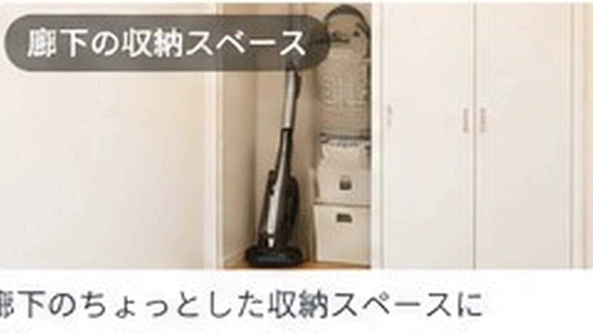

ゴミ袋の交換が面倒！ゴミ箱の近くに収納する方法
ゴミ袋交換をラクにするなら、袋を別の収納から取りに行かず、ゴミ箱のすぐ近くに予備を置くのがシンプルです。

結論：新しい袋を取りに行く工程をなくす
ゴミをまとめたあと、新しい袋を取りにキッチン収納へ移動する。この1往復がなくなるだけでも交換はラクになります。
ゴミ箱の裏・横を使う
ゴミ箱の背面に薄いケースを置く、横にフック付き収納を付けるなど、ゴミ箱から手を伸ばせる範囲に予備を置きます。

全ストックを置かなくてもいい
大容量の袋全部をゴミ箱横へ置く必要はありません。5〜10枚だけ近くに置き、なくなったときにまとめて補充する方法なら見た目もごちゃつきにくくなります。
1枚ずつ取れるか確認
収納ケースを使うなら、取り出すたびに袋の束が崩れないことも大事です。専用品がなくても、元のパッケージから取り出しやすければそのままでOKです。

まとめ
ゴミ袋収納は、おしゃれなケースより交換する場所との距離が重要です。「捨てる→新しい袋を付ける」がその場で終わる配置を目指しましょう。
この悩みで使いやすいアイテム
当サイトはアフィリエイト広告を利用しています。
ゴミ袋 収納 ケース 取り出しやすい
ショップ連携後に購入先ボタンが表示されます。
チラカランの考え方
頑張る回数を増やすより、頑張らなくても回る仕組みを。